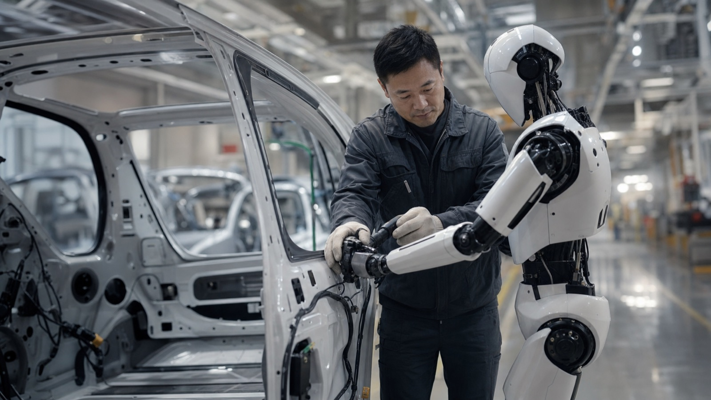

"We plan to expand our capacity to 10,000 units per year, accelerated to 2026 — and Siemens will be a key partner in making that happen."
— James Zhou, CEO of UBTech, Shenzhen, March 16, 2026
In 2025, UBTech Robotics shipped 1,079 humanoid robots — a 35,866% year-over-year increase — to customers including Foxconn, BYD, Geely, and Airbus. The Walker S2 is no longer a prototype in a research lab. It is on real factory floors, performing real assembly tasks, and the order backlog now exceeds 1.4 billion yuan. Here is what is driving that momentum, what the Walker S2 can actually do today, and what it means for industrial automation over the next three years.
From Education Robot to Industrial Powerhouse
UBTech was founded in 2012 in Shenzhen and spent its first decade building a reputation in consumer and educational robotics — most notably the Alpha series robots that appeared at trade shows across Europe and Asia. That foundation gave the company deep expertise in motor control, sensor integration, and robot motion, even if the scale was modest.
The strategic pivot to industrial humanoids accelerated significantly in 2024 and reached escape velocity in 2025. Mass production of the Walker S2 — the company's flagship industrial humanoid — began on November 17, 2025. Orders accumulated throughout the year: a 250-million-yuan contract signed in September 2025 was the single largest of the year. By the time mass production started, UBTech had accumulated over 800 million yuan in orders (~$112 million USD), with total 2025 orders exceeding 1.4 billion yuan. The cumulative unit count for the year reached 1,079 — up from essentially zero the prior year.
For context, this kind of growth rate — 35,866% year-over-year — reflects the transition from bespoke pilot units to genuine commercial volume, not a sustained long-term trend. But it signals that UBTech has crossed the threshold from "demonstration stage" to "production stage," which is where most humanoid robot programs have historically stalled.

What the Walker S2 Can Actually Do
The Walker S2 is a bipedal humanoid robot designed specifically for industrial environments. Its headline technical capability is a 162-degree arm rotation range, which gives it the reach and flexibility needed for assembly tasks that require working around curved surfaces — a recurring challenge in automotive manufacturing, where workers must reach inside door panels, engine bays, and wheel arches.
The robot uses binocular stereo vision to perceive its environment in three dimensions, enabling it to locate and pick components with reasonable accuracy. A dual-loop AI control system coordinates motion planning and task execution in real time. Critically for factory deployment, the Walker S2 features an automatic battery swap mechanism that allows near-continuous operation without requiring human intervention to recharge — addressing one of the practical barriers that plagued earlier generations of humanoid robots in industrial settings.
The honest performance benchmark, however, is sobering: the Walker S2 currently operates at roughly half the efficiency of a skilled human worker on equivalent tasks. The 2027 internal target is 80% of human productivity. That gap matters when evaluating business cases — but it also tells a different story than pure skeptics might suggest. At half human efficiency, a Walker S2 still has economic utility in environments where human labor is scarce, expensive, or operating under hazardous conditions. And the trajectory from 50% to 80% over two years is plausible given the pace of improvement in AI-driven motion control.
Reality Check on Efficiency
The Walker S2 is currently at most half as efficient as a human worker. That is not a knock — it is exactly where useful commercial humanoid deployment begins. The history of industrial automation shows that "good enough for specific tasks" is the entry point, and performance improves rapidly once real-world deployment begins generating training data.
The Customer List: Who Is Actually Buying
The breadth of UBTech's 2025–2026 customer list is what makes this story genuinely interesting. Automotive manufacturers dominate: BYD, Dongfeng Liuzhou Motor, Geely Auto, FAW-Volkswagen Qingdao, Audi FAW, and BAIC New Energy have all placed orders. These are not small pilot commitments — they are production-intent purchases from companies running high-volume assembly lines with well-established operational standards.
Foxconn's presence is particularly significant. As one of the world's largest contract manufacturers — responsible for assembling products for Apple, among many others — Foxconn's adoption of the Walker S2 signals that the robot is being evaluated as a genuine production asset, not a PR prop. The broader trend of AI-driven factory automation at Foxconn has been accelerating, and the Walker S2 fits into that strategy as a physical execution layer alongside software-driven systems.
SF Express, one of China's largest logistics operators, rounds out the blue-chip customer list with deployments targeting warehouse and last-mile sorting tasks. And Airbus has signed on for "early concept testing" of Walker S2 units in aircraft assembly — a demanding environment that, if successful, would represent one of the most technically rigorous humanoid robot deployments to date.
A notable 2025 contract was the 159-million-yuan deal with a Zigong data center, deploying humanoids for facility operations and inspection tasks — an early example of humanoids being used outside traditional manufacturing contexts.
The Siemens Partnership: Scale on a New Level
On March 16, 2026, UBTech and Siemens signed a strategic partnership agreement in Shenzhen. The immediate headline was a target of 10,000 Walker S2 units per year — a production rate that UBTech had originally projected for 2027, now accelerated to 2026 with Siemens as a manufacturing and integration partner.
Siemens brings something UBTech cannot build alone in the near term: access to European manufacturing networks, industrial digitalization infrastructure, and the credibility required to sell into Western automotive and aerospace supply chains. For Siemens, the partnership offers a hardware layer for its factory automation and digital twin platforms — the Walker S2 becomes a physical agent that can execute tasks within Siemens-managed industrial environments.
The combination points toward a future where humanoid robots are not standalone devices but integrated nodes within broader enterprise AI and automation frameworks. The robot executes physical tasks; the surrounding software system coordinates scheduling, quality control, and workflow optimization. This is the architecture that makes humanoid robots economically viable — not the robot alone, but the robot as a component of a larger intelligent system.
UWORLD and the Consumer Horizon
While the Walker S2 drives UBTech's industrial revenue, the company has signaled its long-term ambitions extend beyond the factory floor. The announcement of UWORLD — a new consumer humanoid brand — points toward a future where UBTech competes in home and service environments alongside its industrial business.
The Walker C1, UBTech's service-oriented humanoid, has already been deployed in hotels, airports, and exhibition environments. It was named the official exclusive partner of Chain Expo 2026 and performed ballet at public events — demonstrations designed to establish the brand in consumer consciousness ahead of a more formal consumer product launch.
The consumer market for humanoid robots remains early and uncertain. Price points, reliability expectations, and the actual task scope that consumers will pay for are all unresolved. But UBTech's dual-track strategy — industrial revenue funding consumer development — mirrors the path taken by companies like Boston Dynamics and is structurally sounder than consumer-first approaches that never establish sustainable unit economics.
The Strategic Logic
Industrial humanoid deployment at scale generates two things that matter enormously for long-term competitiveness: real-world training data and cash flow. Both are extremely difficult to acquire any other way. UBTech's 2025 revenue run-rate — exceeding 1.4 billion yuan in orders — funds the AI development that will eventually make the Walker S3, S4, and UWORLD consumer robots viable. The path to the autonomous enterprise runs through exactly this kind of physical AI deployment.
The Production Roadmap: 500 to 10,000
UBTech's production trajectory over the next two years is ambitious but not implausible given the Siemens partnership and the existing customer base:
- 2025: 500 units delivered (target); 1,079 units shipped by year-end — exceeding the original target.
- 2026: 5,000 units/year capacity (original plan); now targeting 10,000/year with Siemens partnership, accelerated from the original 2027 timeline.
- 2027: 10,000 units/year (original target); Walker S2 targeting 80% of human worker productivity.
The scaling from 1,079 units to 10,000 in roughly 12 months requires a tenfold increase in production capacity. That is the core execution risk. Manufacturing humanoid robots at scale involves supply chain challenges in precision actuators, force-torque sensors, and the custom AI inference chips that run onboard. UBTech's Co-Agent intelligent agent system — its proprietary AI architecture for robot task execution — also needs to scale in terms of training data and model updates as the fleet grows.
China's Broader Humanoid Robot Push
UBTech does not exist in isolation. China has made humanoid robotics a national strategic priority, with government support for manufacturing capacity, research, and industrial deployment. Multiple Chinese competitors — including Unitree, Agility Robotics (now partially Chinese-funded), and newer entrants — are pursuing similar industrial humanoid strategies. The domestic market's appetite for automation, driven by an aging workforce and rising labor costs in manufacturing, provides a strong structural tailwind.
This competitive dynamic is worth watching. The Chinese humanoid robot market is experiencing the same kind of government-backed acceleration that drove Chinese EV adoption — rapid unit cost reduction through scale, competitive pressure that forces rapid capability improvement, and a domestic customer base willing to absorb the risks of early-stage technology. Western competitors in humanoid robotics, including Tesla's Optimus and Figure AI, are building toward similar deployment targets but starting from a smaller installed base of production units.
For enterprise leaders evaluating industrial automation strategies, this means the humanoid robot landscape will look materially different in 18 months than it does today. The UBTech story is one data point in a broader transformation of physical labor — a transformation that will reshape how we think about workforce economics and the future of work.
What to Watch in the Next 12 Months
The critical questions for the Walker S2 story over the next year are operational, not technological. Can UBTech actually deliver 10,000 units without compromising quality? Do the automotive deployments at BYD, Geely, and FAW-Volkswagen move from pilot phase to production-line integration? Does Airbus expand beyond "concept testing"? And how does the Walker S2's real-world efficiency data — which UBTech has not published in granular form — compare to the company's internal targets?
The answers will determine whether 2026 is the year humanoid robots cross from "commercially interesting" to "commercially mainstream" in industrial automation. Based on the order book and the Siemens partnership, UBTech has assembled the right ingredients. Execution is what remains.